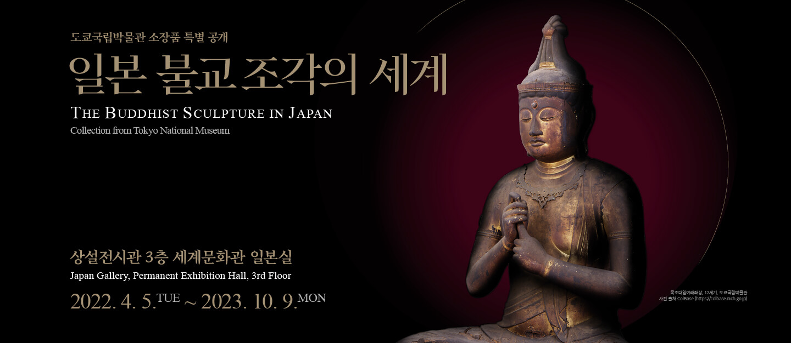
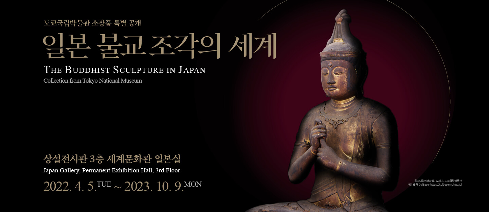
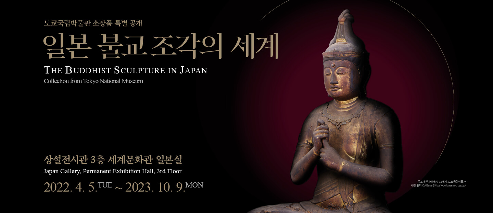

관람시간
월/화/목/금/일
10:00 ~ 18:00
수/토
10:00 ~ 21:00
*입장 마감은 폐관30분 전까지
관람료
무료
특별전시는 유료
- 오시는길
- 예약하기

월/화/목/금/일
10:00 ~ 18:00
수/토
10:00 ~ 21:00
*입장 마감은 폐관30분 전까지
무료
특별전시는 유료
박물관문화 향연
2022-10-22 ~ 2022-10-22
야금: 위대한 지혜
2022-09-30 ~ 2022-12-11
고 이건희 회장 기증 국립광주박물관 특별전
2022-10-05 ~ 2023-01-29
야간괴담회
2022-10-05 ~ 2022-10-26
메소포타미아, 저 기록의 땅
2022-07-22 ~ 2024-01-28
회화소록
2022-09-06 ~ 2022-10-30
대한제국 첫 궁중 연회
2022-09-06 ~ 2022-12-25
영원한 삶의 집, 아스타나 고분
2022-07-16 ~ 2023-07-15
일본 불교조각의 세계
2022-04-05 ~ 2023-10-09
시대의 얼굴
2022-04-29 ~ 2022-08-15


교육

새로운 교육플랫폼 모두(MODU)를 만나보세요!
행사
가족뮤지컬<드래곤 하이>
2022-10-29 - 2022-11-27
힛트가요 뮤지컬<백만송이의 사랑>
2022-10-04 - 2022-01-23
온라인 전시관
세계문화관 중앙아시아실 - 동서문명이 통하는 길

조선 사람들의 꿈, 평생도
어느 수집가의 초대 – 고故 이건희 회장 기증 1주년 기념전
시대의 얼굴, 셰익스피어에서 에드 시런까지